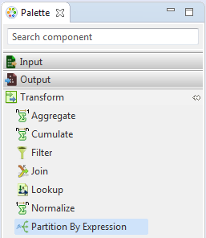
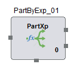

Partition By Expression
Partition By Expression distributes data records to its output partitions based on evaluation of expression specified. It is present under Transform category in the component palette.
By default it contains one input ports, two output port and one unused ports. The number of output ports can be increased in the Partition By Expression configuration property. All the records at the input that satisfy partition condition are available at its output partition. Those records that do not satisfy the condition are transmitted through the unused port.
User is provided with options to create Java class or specify expressions. Java class includes the specified partition conditions which is then applied on the input records. Optionally, user can also use the pre-defined standard Operation Classes, more details are provided in the Operation Class section Operation Class
User can manually create Expressions or use the Predefined Expressions provided in the Expression Editor. Based on the expression provided the records are Partitioned by the Partition By Expression component.
The Partition By Expression component can be easily distinguished in the component palette.  An enlarged version of the same is depicted when dragged on the canvas.  For further reference click on the links below: